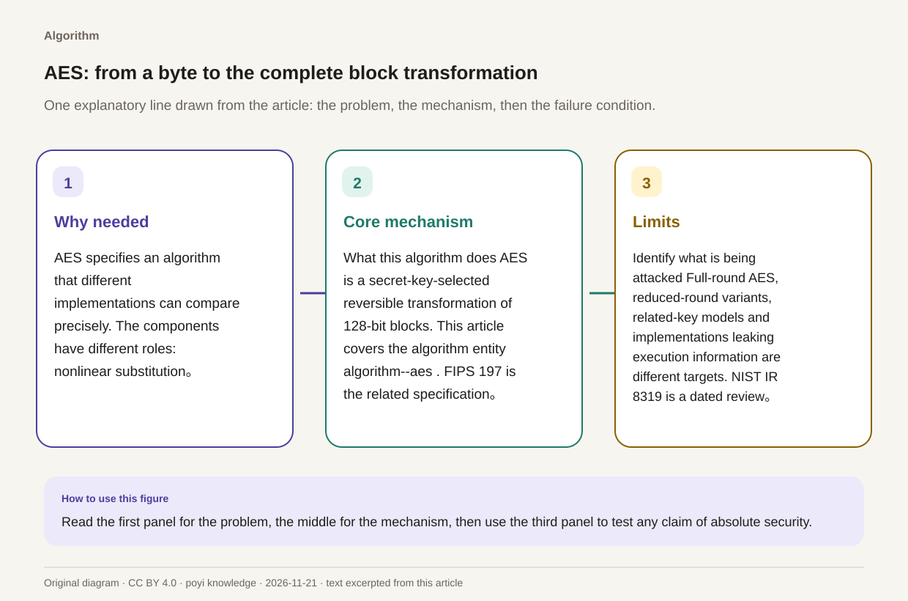
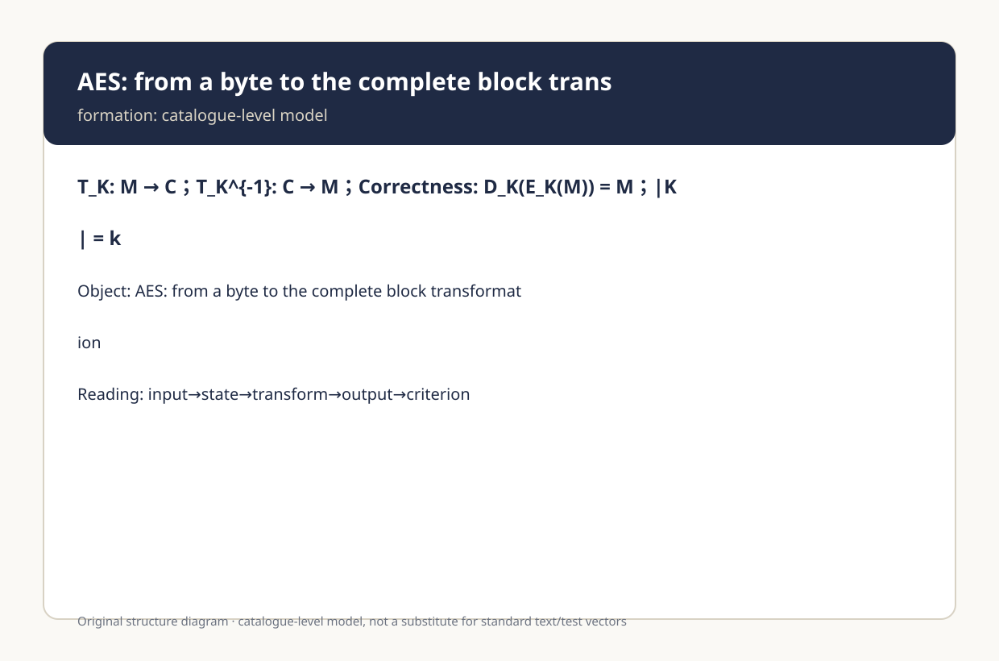

Principles
Algorithm: Advanced Encryption Standard (AES 高级加密标准). ### What this algorithm does
AES is a secret-key-selected reversible transformation of 128-bit blocks. This article covers the algorithm entity algorithm--aes. FIPS 197 is the related specification, not the same catalog entity. AES is not a file format, password derivation method or complete communication protocol. | Variant | Key bytes | Nk (32-bit words) | Nr (rounds) | Round-key groups | Expanded words |
| --- | --- | --- | --- | --- | --- |
| AES-128 | 16 | 4 | 10 | 11 | 44 |
| AES-192 | 24 | 6 | 12 | 13 | 52 |
| AES-256 | 32 | 8 | 14 | 15 | 60 |
All use 16-byte blocks. The suffix describes the key, so AES-256 does not transform 256 plaintext bits at a time. FIPS 197-upd1 defines the parameters and operations; the calculations and explanatory implementation here are educational work for this article. ### Put the bytes in the right places
For input b[0]…b[15], use s[r,c]=b[r+4c]: fill one column before the next. The input 000102030405060708090a0b0c0d0e0f is laid out as:
c0 c1 c2 c3
row0 00 04 08 0c
row1 01 05 09 0d
row2 02 06 0a 0e
row3 03 07 0b 0f
Extract output in the same column order. Each two-digit hex value is one byte. Concatenating the displayed rows is a different serialization. Rows and columns are algorithm indices, not something selected automatically by a machine’s integer endianness. ### Byte arithmetic is not integer arithmetic
A byte represents an element of GF(2⁸). Its bits b7…b0 represent b7·x⁷+…+b1·x+b0. Coefficients are binary, so addition and subtraction are XOR. For example, 57 XOR 83=d4; this is not integer addition followed by a remainder. Multiply without carries, then reduce modulo m(x)=x⁸+x⁴+x³+x+1, whose bit pattern is 0x11b. Multiplication by x is called xtime: shift left and, when the old high bit was set, cancel the x⁸ term. One expression is ((a<<1) XOR ((a&0x80)?0x11b:0)) & 0xff. A version that already truncates to a byte uses 0x1b. The truncation point explains the two constants. Work through 57×02=ae, ae×02=47, then 8e, then 07. Since 13=10 XOR 02 XOR 01, 57×13=07 XOR ae XOR 57=fe. All these numbers are hexadecimal. The verifier compares every one of the 65,536 byte products with a separate carryless-product/long-division calculation. ### SubBytes: inversion followed by an affine map
For nonzero a, find z=a⁻¹ in the field. For a=0, define the intermediate z=0; zero has not acquired a multiplicative inverse. If bit i=0 is the least significant bit, the output bits are:
S(a)i = zi XOR z(i+4) XOR z(i+5) XOR z(i+6) XOR z(i+7) XOR (0x63)i
Indices in parentheses are modulo 8. Equivalently, S(a)=z XOR ROTL8(z,1) XOR ROTL8(z,2) XOR ROTL8(z,3) XOR ROTL8(z,4) XOR 0x63. Thus S(00)=63; the inverse of 53 is ca and S(53)=ed. Computing a 256-entry table is possible, but table-based execution is not automatically timing-safe. Apply S independently to every state byte. The inverse S-box reverses the mapping; it is not the forward S-box applied again. Field inversion introduces nonlinearity, and the affine map is invertible. Invertibility permits decryption; it does not prove the whole cipher secure. ### ShiftRows connects columns
Rotate row r left by r positions, for r=0,1,2,3: s'[r,c]=s[r,(c+r) mod 4]. The counting-byte state above becomes 00050a0f04090e03080d02070c01060b when serialized by columns. Values are moved rather than changed. Inversion rotates right by the same amounts. ### MixColumns combines four bytes
Multiply each column by this matrix. Products use the field multiplication above and sums use XOR:
[02 03 01 01] [a0]
[01 02 03 01] [a1]
[01 01 02 03] [a2]
[03 01 01 02] [a3]
In round one of our example, the first column after ShiftRows is 09 28 7f 47. Its first output is 02·09 XOR 03·28 XOR 7f XOR 47 = 12 XOR 78 XOR 7f XOR 47 = 52; the complete column becomes 52 9f 16 c2. Mixing acts within one column. Alternating it with ShiftRows mixes contributions from different columns across rounds. The inverse matrix has rows 0e 0b 0d 09, 09 0e 0b 0d, 0d 09 0e 0b, 0b 0d 09 0e. The verifier checks forward/inverse composition on 128 single-bit basis states as well as the official intermediate values. ### AddRoundKey introduces secret parameters
A round key always contains 16 bytes. XOR them into the state using the same ordering. Repeating the operation with the same key undoes it: x XOR k XOR k=x. Our first plaintext byte 6b combined with key byte 2b yields 40. Do not substitute integer addition or XOR the entire 24/32-byte master key into each round. ### Expansion differs by more than round count
Split the master key into four-byte words w[0]…w[Nk−1]. For each later index i, start with t=w[i−1]:
- At multiples of Nk, rotate t left by one byte (RotWord), substitute its bytes (SubWord), then XOR Rcon[i/Nk]. Only AES-256 has another branch: when i mod 8=4, apply SubWord alone, with no rotation or Rcon. Otherwise keep t unchanged. In all cases set
w[i]=w[i−Nk] XOR t. Rcon is a four-byte word whose first byte takes01,02,04,08,10,20,40,80,1b,36, generated by field doubling. Round r uses w[4r]…w[4r+3]. AES-192’s six-word expansion cycle therefore crosses four-word round-key boundaries; it does not supply a six-word round key. For our AES-128 key, w[0]=2b7e1516 and w[3]=09cf4f3c. RotWord gives cf4f3c09; SubWord gives 8a84eb01; XOR with 01000000 gives 8b84eb01. Therefore w[4]=2b7e1516 XOR 8b84eb01=a0fafe17. Continuing gives round key one,a0fafe1788542cb123a339392a6c7605. This expansion is also checked against FIPS 197 Appendix A. ### Complete encryption and inversion order
Begin encryption with AddRoundKey. Rounds 1…Nr−1 perform SubBytes, ShiftRows, MixColumns, AddRoundKey. Round Nr performs SubBytes, ShiftRows, AddRoundKey. The initial key addition is not another complete substitution round: ten rounds and eleven round-key groups are consistent. The direct inverse begins with the last round key. Then process ordinary rounds backwards: InvShiftRows, InvSubBytes, AddRoundKey, InvMixColumns. Finish with InvShiftRows, InvSubBytes and the original round key. Omitting final-round MixColumns does not eliminate inverse mixing from decryption; ordinary rounds still need it. An equivalent inverse implementation can transform round keys and reorder operations, but its steps must not be mixed casually with this direct inverse.

Why it matters
AES specifies an algorithm that different implementations can compare precisely. The components have different roles: nonlinear substitution, positional/column diffusion and secret key addition. Its designers analyze their combination using approaches such as the wide trail strategy; repeating scrambling many times is not a design explanation.
Correctness can be reasoned about layer by layer: each operation is invertible, expansion determines the round keys, and reversing the sequence recovers the input. Security asks a different question: can an attacker recover a key or distinguish outputs more cheaply than expected under a stated model? Roundtrips, vectors and intermediate-state checks test algorithm implementation, not that security claim.
Keeping block length, key length, round count and key-group count separate also makes debugging concrete. A length error, an indexing error and an expansion error leave different first points of failure.
Applications
A block cipher answers what happens to these sixteen bytes under this key. Handling long messages, counters, authentication and replay requires surrounding constructions. SP 800-38A describes ECB/CBC/CFB/OFB/CTR modes; SP 800-38D defines GCM’s confidentiality/authentication construction. Their input requirements cannot be compressed into the name AES.
A specific current example is TLS 1.3 as specified by RFC 9846. Appendix B.4 lists AES-GCM, AES-CCM and ChaCha20-Poly1305 suites, showing three layers: primitive, AEAD construction and protocol. RFC 9846 obsoletes RFC 8446. AES-ECB is not one of those TLS 1.3 AEAD suites. Suite-name hashes do not change the AES block length.
This article calls an ECB single-block interface only to obtain the same primitive from Node/OpenSSL: exactly one block, padding disabled, no message protocol. It is a testing arrangement, not an application-default recommendation.

Limits & attacks
Full-round AES, reduced-round variants, related-key models and implementations leaking execution information are different targets. NIST IR 8319 is a dated review, not a statement that every AES instance is broken or secure forever. This article invents neither a fixed 126-bit effective strength nor a quantum attack running time.
Under one key, equal input blocks give equal output blocks. Independently applying the bare transformation to repeated message blocks leaks equality. Our two equal blocks produce equal ciphertext: a limitation of that construction, not an incorrect AES calculation.
GCM nonce reuse under one key undermines confidentiality and authenticity. On portions reusing the same counter keystream, C1=P1 XOR S and C2=P2 XOR S imply C1 XOR C2=P1 XOR P2. This does not automatically reveal both full plaintexts from ciphertexts alone. Additional recovery depends on what else is known. RFC 5116 §5.1.1 and SP 800-38D Appendix A discuss the danger and its conditions.
Length is not secrecy: a published 128-bit test key supplies no operational secret. Deriving keys from passwords, distributing them and storing them are separate tasks.
Osvik, Shamir and Tromer’s original research demonstrates leakage of data-dependent lookup patterns through shared caches. Our JavaScript uses tables, branches, copies and observable intermediate states. It promises no constant-time behavior, dependable erasure, physical attack resistance or fault protection. Run it only on public examples. Correct ciphertext does not remove these extra information channels.
History
AES resulted from NIST’s public selection process, initiated in 1997. NIST announced selection of Joan Daemen and Vincent Rijmen’s Rijndael on October 2, 2000. FIPS 197 carries a publication date of November 26, 2001. AES fixes the block length at 128 bits; the broader Rijndael family does not make other block lengths valid AES.
The May 9, 2023 FIPS 197 update improved terminology, presentation and key-expansion diagrams without changing the algorithm. An updated document is not a redesigned cipher. This algorithm article explains the mechanism; the related standard entity still needs its own treatment of document versions, scope, constraints and normative relationships.
Worked example & verification
Worked example
Take one published or standard test vector, record the input, the ordered steps and the byte-exact output, then compare with an independent implementation. Where no citable numeric vector is available, the entry records only structural steps and does not invent an output.
References
- Wikipedia search entry for AES 高级加密标准. https://zh.wikipedia.org/w/index.php?search=AES%20%E9%AB%98%E7%BA%A7%E5%8A%A0%E5%AF%86%E6%A0%87%E5%87%86
- Handbook of Applied Cryptography (Menezes, van Oorschot, Vanstone). https://www.cacr.math.uwaterloo.ca/hac/